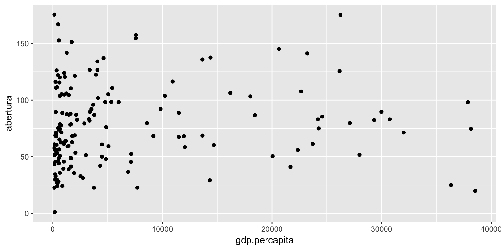
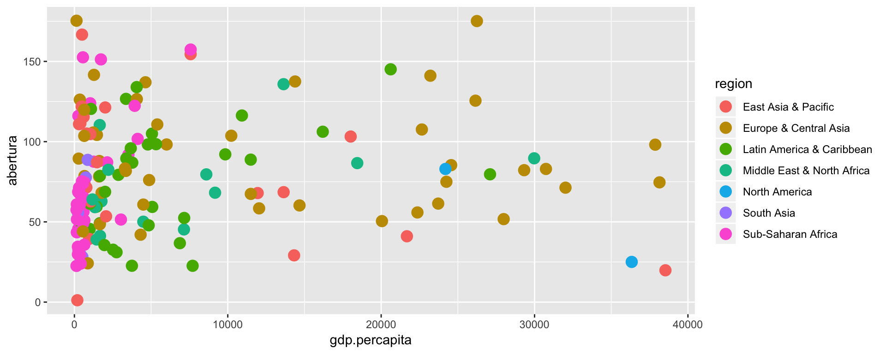
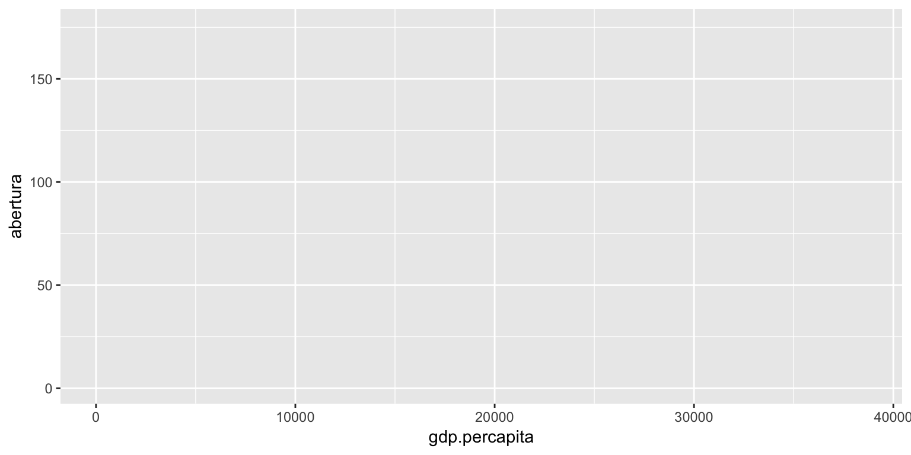
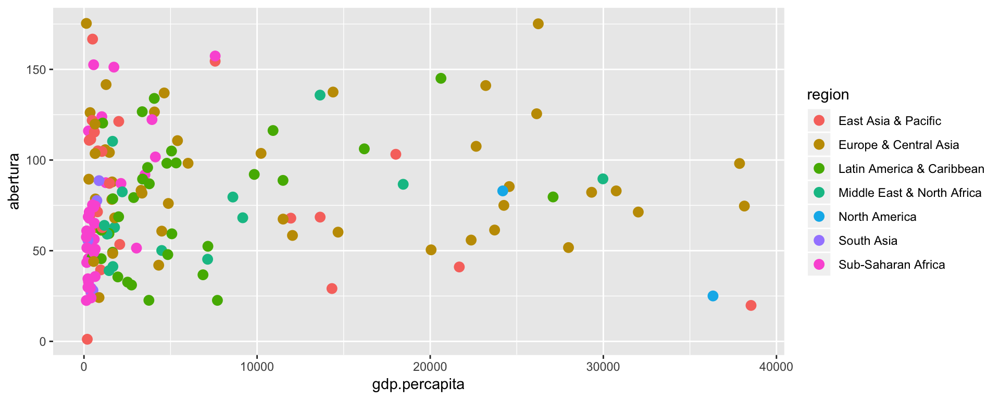
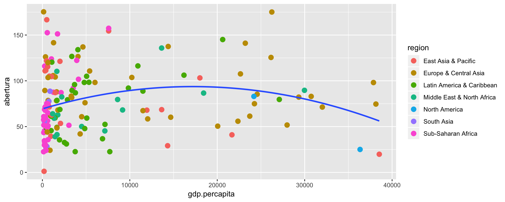
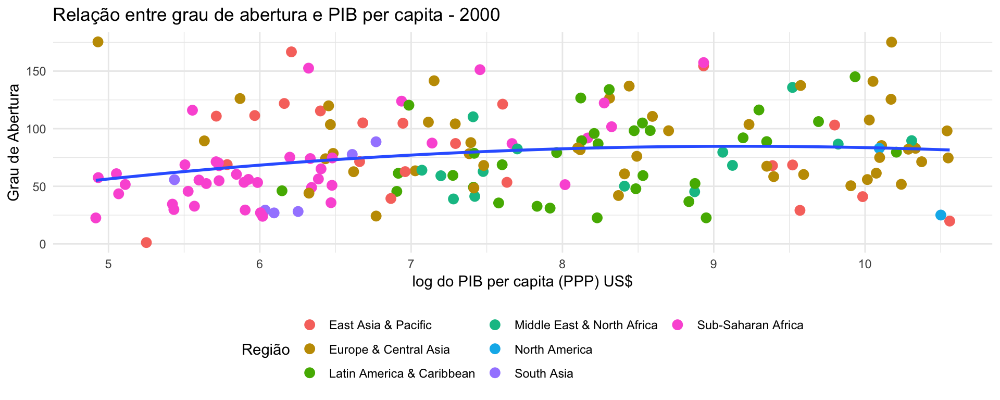

O ggplot2 é um pacote essencial para quem deseja trabalhar com análise de dados no R. O código nativo do R até possui funções básicas de visualizações, mas essas funções são mais usadas para uma exploração rápida dos dados, algo próximo de um rascunho.
Por sua vez, o ggplot2 pode ser usado tanto para criação rápida de gráficos quanto para criar gráficos complexos e detalhados. Tornando-se um pacote bastante versátil e completo.
Sobre o ggplot2
O ggplot2 foi desenvolvido pelo Hadley Wickham que é o mesmo autor do dplyr, tidyr e outros pacotes fundamentais para analistas de dados. A filosofia por trás do pacote vem da obra The Grammar of Graphics.
A ideia original do pacote é de que um gráfico pode ser elaborado a partir da combinação de vários componentes independentes. Entenda esses componentes como camadas (layers), sendo que cada camada pode ter diversos parâmetros. Assim, um gráfico pode ser criado de maneiras bastante distintas, adicionando e misturando qualquer tipo de camada e escolhendo seus parâmetros.
Essa combinação de camadas e parâmetros aumenta consideravelmente as possibilidades dos gráficos feitos com ggplot2.
As camadas podem ser de pontos, barras ou linhas, textos, marcações de áreas, etc. Dessa forma, o analista pode iniciar a partir de um gráfico simples e ir adicionando camadas para enriquecer a visualização.
Para ver o que pode ser adicionado/combinado em um gráfico, entre neste link. O uso dos componentes (camadas) ficará claro mais a frente nesse post.
Feita essa introdução, iremos construir alguns exemplos para demonstrar o funcionamento do pacote.
Dados do Banco Mundial - World Development Indicators
Antes de partir para criação dos gráficos, precisamos dos dados. Neste post, utilizaremos dados do Banco Mundial, mais especificamente, o World Development Indicators. O interessante é que existe um pacote em R, o WDI, que torna a importação desses dados direta, sem que seja necessário ir no site do Banco Mundial e baixar os dados.
Essa base de dados possui uma infinidade de indicadores. Aqui serão utilizadas dois indicadores: grau de abertura (exportações + importações sobre o PIB) e PIB per capita calculado pela Paridade de Poder Compra (PPP) em US$. A escolha desses indicadores deve-se ao fato de querermos elaborar um gráfico similar ao elaborado na página 16 do A Practical Guide do Trade Policy Analysis.
Utilizaremos a função WDIsearch() para encontrar os nomes dos indicadores desejados.
library(WDI)
library(dplyr)
library(ggplot2)
WDIsearch("Trade \\(% of GDP\\)")
indicator name
[1,] "NE.TRD.GNFS.ZS" "Trade (% of GDP)"
[2,] "TG.VAL.TOTL.GD.ZS" "Merchandise trade (% of GDP)"
WDIsearch("GDP per capita \\(current US\\$\\)")
indicator name
"NY.GDP.PCAP.CD" "GDP per capita (current US$)" Utilizaremos o NE.TRD.GNFS.ZS e NY.GDP.PCAP.CD. Os dados são obtidos a partir da WDI()
abertura <- WDI(country = 'all', indicator = 'NE.TRD.GNFS.ZS', start = 2000, end = 2000,
extra = TRUE)
abertura <- abertura %>% filter(!is.na(capital) & capital != "")
head(abertura)
iso2c country NE.TRD.GNFS.ZS year iso3c
1 AD Andorra NA 2000 AND
2 AE United Arab Emirates NA 2000 ARE
3 AF Afghanistan NA 2000 AFG
4 AG Antigua and Barbuda 116.28179 2000 ATG
5 AL Albania 63.45407 2000 ALB
6 AM Armenia 73.91852 2000 ARM
region capital longitude latitude
1 Europe & Central Asia Andorra la Vella 1.5218 42.5075
2 Middle East & North Africa Abu Dhabi 54.3705 24.4764
3 South Asia Kabul 69.1761 34.5228
4 Latin America & Caribbean Saint John's -61.8456 17.1175
5 Europe & Central Asia Tirane 19.8172 41.3317
6 Europe & Central Asia Yerevan 44.509 40.1596
income lending
1 High income Not classified
2 High income Not classified
3 Low income IDA
4 High income IBRD
5 Upper middle income IBRD
6 Upper middle income IBRD
gdp.percapita <- WDI(country = 'all', indicator = 'NY.GDP.PCAP.CD', start = 2000, end = 2000,
extra = TRUE)
gdp.percapita <- gdp.percapita %>% filter(!is.na(capital) & capital != "")
head(gdp.percapita)
iso2c country NY.GDP.PCAP.CD year iso3c
1 AD Andorra 21936.5301 2000 AND
2 AE United Arab Emirates 33291.4194 2000 ARE
3 AF Afghanistan NA 2000 AFG
4 AG Antigua and Barbuda 10920.8427 2000 ATG
5 AL Albania 1126.6833 2000 ALB
6 AM Armenia 622.7421 2000 ARM
region capital longitude latitude
1 Europe & Central Asia Andorra la Vella 1.5218 42.5075
2 Middle East & North Africa Abu Dhabi 54.3705 24.4764
3 South Asia Kabul 69.1761 34.5228
4 Latin America & Caribbean Saint John's -61.8456 17.1175
5 Europe & Central Asia Tirane 19.8172 41.3317
6 Europe & Central Asia Yerevan 44.509 40.1596
income lending
1 High income Not classified
2 High income Not classified
3 Low income IDA
4 High income IBRD
5 Upper middle income IBRD
6 Upper middle income IBRDAgora, os dados serão unidos em um data.frame. Além disso, renomearemos as variáveis e selecionaremos somente aquelas de interesse:
dados <- inner_join(abertura, gdp.percapita) %>%
select(country, year, NE.TRD.GNFS.ZS, NY.GDP.PCAP.CD, region) %>%
rename(abertura = NE.TRD.GNFS.ZS,
gdp.percapita = NY.GDP.PCAP.CD) %>%
na.omit() %>%
filter(abertura < 200)
head(dados)
country year abertura gdp.percapita
1 Antigua and Barbuda 2000 116.28179 10920.8427
2 Albania 2000 63.45407 1126.6833
3 Armenia 2000 73.91852 622.7421
4 Angola 2000 152.54711 556.8363
5 Argentina 2000 22.62244 7708.1010
6 Austria 2000 85.36050 24564.4583
region
1 Latin America & Caribbean
2 Europe & Central Asia
3 Europe & Central Asia
4 Sub-Saharan Africa
5 Latin America & Caribbean
6 Europe & Central Asia
dim(dados)
[1] 165 5Usando o qplot (Quick Plot)
No ggplot2, há duas maneiras de gerar gráficos. Utilizando a função qplot() ou usando ggplot() e ir adicionando camadas. Primeiramente, será introduzida a função qplot(), que é uma maneira mais rápida de criar uma visualização, porém com menos flexibilidade.
Essa função funciona com uma espécie de substituto ao plot() do R base. Para ver os detalhes desta função digite: ?qplot.
No gráfico abaixo, como não passamos nada no parâmetro geom, o qplot() automaticamente atribui uma forma geométrica para o gráfico. Se x e y são informados, adiciona-se pontos. Caso apenas x seja informado, será criado um histograma.
qplot(x = gdp.percapita, y = abertura, data = dados)
O mesmo resultado poderia ser obtido com:
qplot(x = gdp.percapita, y = abertura, data = dados, geom = "point")
Agora, suponha que queremos colorir os pontos de acordo com a região de cada país. Basta informar o nome da variável no parâmetro color. O mesmo pode ser feito, por exemplo, para os parâmetros size e shape. O size pode ser um tamanho fixo dos pontos ou pode ser dado por uma variável, usualmente, numérica.
qplot(x = gdp.percapita, y = abertura, data = dados, geom = "point",
color = region, size = I(4))
Usamos a função I() para evitar que a função entenda o 5 como uma nova variável.
Usando o ggplot()
Na prática, a função ggplot() é muito mais utilizada que o qplot().
Essa função inicia um gráfico. A partir daí, a adição de camadas é que fará o seu gráfico tornar-se uma visualização de verdade.
Vamos seguir passo à passo.
Primeiramente inciamos um gráfico informando os dados e, no aes(), descrevendo como as variáveis dos dados são mapeadas na visualização. Só foi informado que o eixo x e o eixo y são dados, respectivamente, pelas variáveis gdp.percapita e abertura. Como não adicionados nenhum objeto geométrico, nada mais é mostrado.
ggplot(dados, aes(x = gdp.percapita, y = abertura))
Seguindo, vamos adicionar uma camada de pontos e definir o seu tamanho igual a 3. Além disso, vamos mapear as cores dos pontos à variável region.
ggplot(dados, aes(x = gdp.percapita, y = abertura)) +
geom_point(aes(color = region), size = 3)
No gráfico que nos baseamos nesse post, os autores adicionam uma curva estimada para evidenciar a possível relação entre a renda per capita e o grau de abertura. No caso, os autores incluem uma curva obtida a partir da estimação de um modelo polinomial de ordem 2. Ou seja, \(y_i = \beta_{0} + \beta_1 x_i + \beta_2 x_i^2 + u_i\).
ggplot(dados, aes(x = gdp.percapita, y = abertura)) +
geom_point(aes(color = region), size = 3) +
geom_smooth(method = 'lm', formula = y ~ poly(x, 2), se = FALSE)
Em seguida, iremos alterar alguns detalhes do gráfico anterior. Podemos criar um objeto com um gráfico do ggplot2 e ir adicionando/alterando partes do gráfico de maneira incremental.
Usar o logaritmo do PIB per capita no eixo x
p <- ggplot(dados, aes(x = log(gdp.percapita), y = abertura)) + geom_point(aes(color = region), size = 3) + geom_smooth(method = 'lm', formula = y ~ poly(x, 2), se = FALSE)Adicionar o título do gráfico
p <- p + ggtitle("Relação entre grau de abertura e PIB per capita - 2000")Alterar os rótulos dos eixos x e y
p <- p + ylab("Grau de Abertura") + xlab("log do PIB per capita (PPP) US$")Alterar o tema do gráfico
p <- p + theme_minimal()Alterar a posição e o título da legenda
p <- p +
theme(legend.position = "bottom") +
guides(color = guide_legend(title = "Região", ncol = 3))
p
Ou então podemos fazer tudo de uma só vez:
p <- ggplot(dados, aes(x = log(gdp.percapita), y = abertura)) +
geom_point(aes(color = region), size = 3) +
geom_smooth(method = 'lm', formula = y ~ poly(x, 2), se = FALSE) +
ggtitle("Relação entre grau de abertura e PIB per capita - 2000") +
ylab("Grau de Abertura") +
xlab("log do PIB per capita (PPP) US$") +
theme_minimal() +
theme(legend.position = "bottom") +
guides(color = guide_legend(title = "Região", ncol = 3))
p
Considerações Finais
Este primeiro post é uma introdução ao ggplot2. Esperamos que tenha entendido a ideia geral de um gráfico no ggplot2, o conceito de camadas e como é o processo de incrementar os elementos de um gráfico.
A melhor forma para aprender sobre o pacote é tentando criar os seus próprios gráficos. Todavia, continuaremos com posts sobre este pacote, elaborando outros exemplos mais avançados e tratando de detalhes de customização, de objetos geométricos, de extensões etc.
Se tiver alguma dúvida, deixe um comentário.